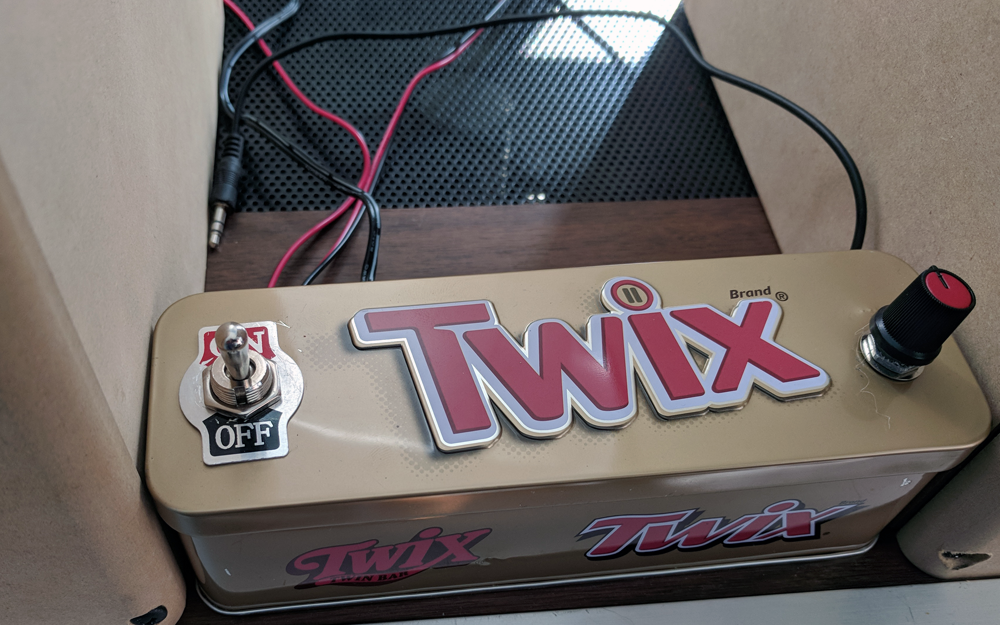

Not much to show; I forgot to take pictures while I was making it. It has a small amp board like the one in the
Bluetooth Box Amp--but this one doesn't have Bluetooth. You can see the 3.5mm headphone-style jack that is used
for input. The other wires go to the speakers (the amp is between the speakers) and the power supply. It is
powered by a "wall-wart," so the power supply doesn't take up space inside. I added the on-off
switch and the volume knob--and the potentiometer to actually control the volume--then made holes for the wires,
and...a Twix Box Amp. It actually sounds pretty good! (Click for a larger image.)
